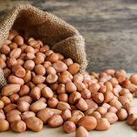
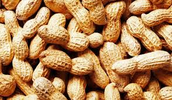
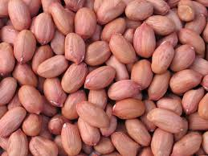

GROUNDNUT
Introduction

The peanut (Arachis hypogaea), also known as the groundnut, goober (US), pindar (US) or monkey nut (UK), is a legume crop grown mainly for its edible seeds. It is widely grown in the tropics and subtropics, important to both small and large commercial producers. It is classified as both a grain legume and, due to its high oil content, an oil crop. World annual production of shelled peanuts was 44 million tonnes in 2016, led by China with 38% of the world total. Atypically among legume crop plants, peanut pods develop underground (geocarpy) rather than above ground. With this characteristic in mind, the botanist Carl Linnaeus gave peanuts the specific epithet hypogaea, which means "under the earth".
The peanut belongs to the botanical family Fabaceae (or Leguminosae), commonly known as the legume, bean, or pea family. Like most other legumes, peanuts harbor symbiotic nitrogen-fixing bacteria in root nodules. The capacity to fix nitrogen means peanuts require less nitrogen-containing fertilizer and improve soil fertility, making them valuable in crop rotations.
The botanical definition of a nut is "a fruit whose ovary wall becomes hard at maturity." Using this criterion, the peanut is not a nut. However, peanuts are usually categorized as nuts for culinary purposes and in common English more generally. Peanuts are similar in taste and nutritional profile to tree nuts such as walnuts and almonds, and, as a culinary nut, are often served in similar ways in Western cuisines.
Nutritions
Peanuts are packed with essential nutrients. Here are some key nutritional components of peanuts:
- Protein: Peanuts are rich in protein, making them a good plant-based protein source.
- Fats: They contain monounsaturated and polyunsaturated fats, including omega-6 and omega-3 fatty acids, which are beneficial for heart health.
- Vitamins: Peanuts are a good source of vitamin E, which is an antioxidant that helps protect cells from damage. They also contain small amounts of B vitamins, such as niacin, folate, and thiamine.
- Minerals: Peanuts are rich in minerals like magnesium, phosphorus, potassium, zinc, copper, and selenium, all of which play important roles in various bodily functions.
- Fiber: They contain dietary fiber, which aids in digestion and helps maintain a healthy gut.
- Antioxidants: Peanuts contain antioxidants like resveratrol, which may have anti-inflammatory and heart-protective effects.
However, it's important to note that peanuts are also high in calories, so moderation is key, especially if you're watching your calorie intake.
Soil and Nutritions

Soil and nutrition are closely linked when it comes to plant growth and the nutritional content of crops. Here are some key points about how soil affects plant nutrition:
- Soil Composition: The composition of soil, including its texture (sand, silt, clay), organic matter content, pH level, and nutrient availability, plays a crucial role in providing plants with essential nutrients.
- Nutrient Availability: Soil nutrients such as nitrogen, phosphorus, potassium, calcium, magnesium, sulfur, and micronutrients like iron, manganese, zinc, and copper are vital for plant growth and development. The availability of these nutrients to plants depends on factors like soil pH, organic matter content, and microbial activity.
- Soil pH: The pH level of soil influences nutrient availability. For example, acidic soils (low pH) may have higher availability of certain nutrients like iron and manganese but lower availability of others like phosphorus. Conversely, alkaline soils (high pH) may have reduced availability of some nutrients.
- Organic Matter: Soil rich in organic matter provides plants with essential nutrients over time as organic matter decomposes. It also improves soil structure, water retention, and microbial activity, which are beneficial for plant health.
- Microbial Activity: Soil microbes play a crucial role in nutrient cycling and making nutrients available to plants. Beneficial microbes can enhance nutrient uptake by plants and improve soil fertility.
- Fertilization: In agricultural practices, fertilizers are often used to supplement soil nutrients and improve plant growth. However, excessive use of fertilizers can lead to nutrient imbalances, environmental pollution, and soil degradation.
- Soil Testing: Regular soil testing helps determine nutrient levels, pH, and other soil properties, allowing for targeted nutrient management and adjustments to optimize plant nutrition.
Overall, maintaining healthy soil with balanced nutrients, appropriate pH, good organic matter content, and microbial activity is essential for ensuring optimal plant nutrition and crop productivity.
How to plant
To plant peanuts, follow these steps:
- Select a Suitable Location:
- Peanuts require full sun and well-drained soil. Choose a location with loose, sandy soil that is free from rocks and debris.
- Prepare the Soil:
- Loosen the soil to a depth of about 6 to 8 inches using a shovel or garden fork. Remove any weeds, rocks, or large clumps of soil.
- Incorporate organic matter such as compost or aged manure to improve soil fertility and structure.
- Choose Peanut Varieties:
- Select peanut varieties that are suitable for your climate and growing conditions. Some common varieties include Virginia, Spanish, and Valencia peanuts.
- Obtain Peanut Seeds (or Seeds):
- Purchase high-quality peanut seeds or obtain seeds from mature peanut pods.
- Planting Peanut Seeds:
- Plant peanut seeds after the last frost date in your area, when soil temperatures have warmed to at least 65-70°F (18-21°C).
Space the peanut seeds about 6 to 8 inches apart in rows, with rows spaced about 18 to 24 inches apart.
Plant the seeds 1 to 2 inches deep in the soil, covering them with loose soil.
- Watering:
- Water the planted seeds immediately after planting to ensure the soil is evenly moist.
- Continue to water regularly, keeping the soil consistently moist but not waterlogged. Peanuts need about 1 to 1.5 inches of water per week.
- Weed Control:
- Keep the area around the peanut plants free from weeds, as weeds can compete for nutrients and water.
- Use mulch to help suppress weeds and retain soil moisture.
- Fertilization:
- Peanuts are nitrogen-fixing plants, so they don't require heavy nitrogen fertilization. However, you can apply a balanced fertilizer according to soil test recommendations or use a starter fertilizer at planting time.
Peanut Plant Care:
- Monitor the plants for pests and diseases. Common pests include aphids, thrips, and leafhoppers, while diseases like leaf spot and pod rot can affect peanuts.
- Provide support for the plants if needed, especially in windy areas.
- Harvesting Peanuts:
- Peanuts are ready for harvest when the leaves turn yellow and the pods mature, usually about 4 to 5 months after planting.
- Carefully dig up the peanut plants with a garden fork, being gentle to avoid damaging the pods.
- Shake off excess soil and allow the pods to dry in a well-ventilated area for a week or two.
- Shell the peanuts and store them in a cool, dry place.
Following these steps can help you successfully plant and grow peanuts in your garden or farm.
Fertilizing

Fertilizing peanuts involves providing the necessary nutrients for their growth and development. Here are some guidelines for fertilizing peanuts:
- Soil Testing: Before fertilizing, it's essential to conduct a soil test to determine the nutrient levels in your soil. This test will guide you in making informed decisions about the type and amount of fertilizer to use.
- Nitrogen: Peanuts are unique because they can fix nitrogen from the air with the help of nitrogen-fixing bacteria (Rhizobia) that form nodules on their roots. As a result, peanuts typically require less nitrogen fertilizer compared to other crops. However, if your soil is deficient in nitrogen or if you're growing peanuts in rotation with nitrogen-demanding crops, you may need to supplement with nitrogen fertilizer. Apply nitrogen according to soil test recommendations or as needed based on plant growth and leaf color.
- Phosphorus and Potassium: Peanuts benefit from phosphorus and potassium for root development, flowering, and pod formation. Use a fertilizer that provides phosphorus and potassium based on soil test results. A balanced fertilizer with a ratio of 10-10-10 or similar can be suitable, but adjust the application rate based on soil nutrient levels.
- Timing of Fertilization:
- Apply fertilizers before planting or at planting time to ensure nutrients are available to the developing plants.
- Side-dress additional fertilizers during the growing season if needed, especially if soil tests indicate nutrient deficiencies or if plants show signs of nutrient stress.
- Application Method:
- Broadcast granular fertilizers evenly over the soil surface and incorporate them into the soil before planting.
- For side-dressing during the growing season, apply fertilizers in a band near the plants' root zone, taking care not to damage the roots.
- Organic Matter: Incorporating organic matter such as compost or aged manure into the soil can also contribute nutrients and improve soil fertility over time. Organic matter helps retain moisture, promotes microbial activity, and enhances nutrient availability to plants.
- Micronutrients: Monitor plant health and watch for signs of micronutrient deficiencies, such as yellowing or stunted growth. If needed, supplement with micronutrient fertilizers or foliar sprays containing elements like iron, manganese, zinc, and copper.
- Water Management: Proper irrigation practices are crucial for nutrient uptake and plant growth. Ensure adequate moisture levels without waterlogging, as excessive moisture can leach nutrients from the soil or promote diseases.
By following these fertilization guidelines and adjusting based on soil conditions and plant needs, you can support healthy growth and maximize yield potential for your peanut crop.